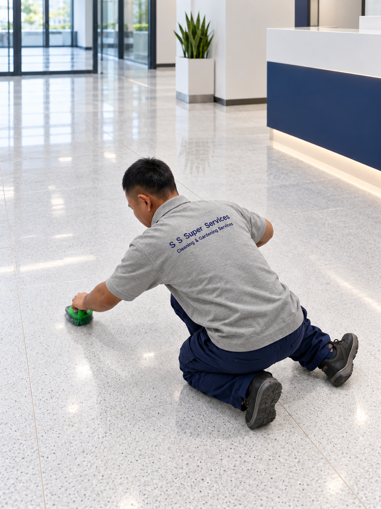
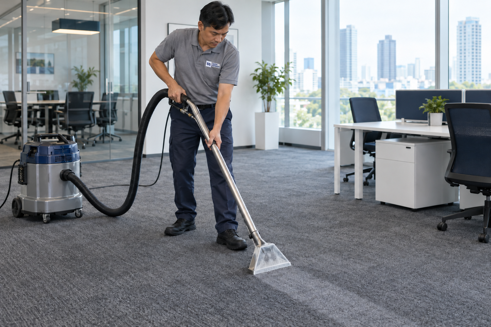
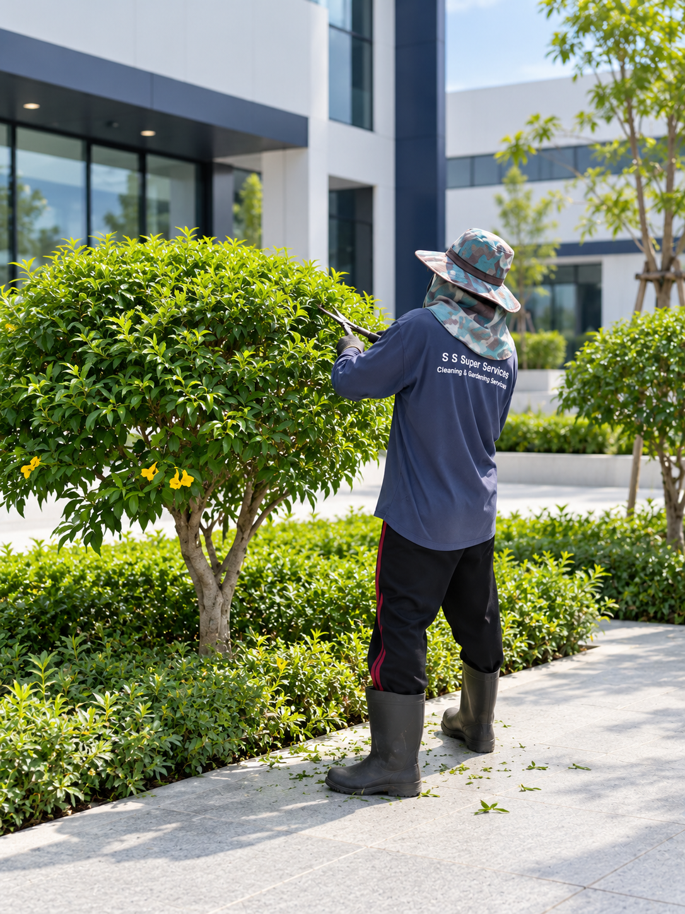

OUR SERVICES
บริการของเรา
OUR SERVICES
บริการทำความสะอาดและดูแลสวน

FLOOR CLEAN
ทำความสะอาดพื้น ขัดพื้น และดูแลพื้นทุกประเภท
ดูรายละเอียดเพิ่มเติม
FIRST CLEAN
ทำความสะอาดหลังเสร็จสิ้นการก่อสร้าง อาคารชุด สำนักงาน และโรงงาน
ดูรายละเอียดเพิ่มเติมSPIDERMAN / CRANE
ทำความสะอาดกระจกภายนอกด้วยอุปกรณ์เฉพาะทาง
ดูรายละเอียดเพิ่มเติม
CARPET CLEANING
ทำความสะอาดพรมทุกประเภทด้วยอุปกรณ์มาตรฐาน
ดูรายละเอียดเพิ่มเติมCRYSTALLIZATION
ฟื้นฟูและเคลือบพื้นหินให้เงางามและทนทาน
ดูรายละเอียดเพิ่มเติม
GARDENING
จัดและดูแลสวน ตัดแต่งต้นไม้อย่างมืออาชีพ
ดูรายละเอียดเพิ่มเติม
FACILITIES SERVICES
จัดหาพนักงานประจำตำแหน่งและงานบริการต่าง ๆ
ดูรายละเอียดเพิ่มเติมCLEANING SUPPLIES
จัดจำหน่ายเคมีภัณฑ์และอุปกรณ์ทำความสะอาดทุกประเภท
ดูรายละเอียดเพิ่มเติมFLOOR CLEAN
ทำความสะอาดและดูแลพื้น
ดูแลความสะอาดพื้นในสำนักงาน อาคาร และโรงงาน ตั้งแต่เก็บฝุ่นและคราบสกปรก ไปจนถึงขัดล้างพื้นตามลักษณะการใช้งาน โดยพิจารณาชนิดวัสดุและสภาพพื้นก่อนเลือกอุปกรณ์กับน้ำยาที่เหมาะสม พร้อมตกลงขอบเขตงานและช่วงเวลาเข้าบริการให้สอดคล้องกับการใช้พื้นที่
FIRST CLEAN
ทำความสะอาดหลังการก่อสร้าง
ทำความสะอาดอาคารชุด สำนักงาน และโรงงานหลังงานก่อสร้างหรือปรับปรุง เพื่อเตรียมพื้นที่ก่อนเข้าใช้งาน ครอบคลุมการเก็บฝุ่นและคราบตกค้างตามพื้น กระจก และจุดสัมผัสต่าง ๆ โดยสำรวจสภาพหน้างานและชนิดพื้นผิวก่อนวางลำดับการทำงาน รวมถึงกำหนดจุดที่ต้องดูแลเป็นพิเศษร่วมกับผู้ว่าจ้าง
SPIDERMAN / CRANE
ทำความสะอาดกระจกภายนอก
ทำความสะอาดกระจกภายนอกอาคารในบริเวณที่เข้าถึงได้ยาก ด้วยแนวทางเข้าถึงพื้นที่และอุปกรณ์ที่เหมาะกับลักษณะอาคาร ก่อนเริ่มงานจะประเมินความสูง จุดเข้าถึง และสภาพแวดล้อม เพื่อกำหนดขอบเขตการทำความสะอาดและการจัดพื้นที่ทำงาน โดยคำนึงถึงผู้ใช้อาคารและพื้นที่โดยรอบ
CARPET CLEANING
ทำความสะอาดพรม
ดูแลพรมในสำนักงาน ห้องประชุม และพื้นที่ใช้งานส่วนกลาง เพื่อลดฝุ่นสะสมและทำความสะอาดคราบตามสภาพการใช้งาน โดยตรวจชนิดพรมและบริเวณที่มีคราบก่อนเลือกวิธีทำความสะอาด พร้อมวางแผนช่วงเวลาเข้าบริการและระยะพักพื้นที่ให้เหมาะสมก่อนกลับมาใช้งาน
CRYSTALLIZATION
ฟื้นฟูและเคลือบพื้นหิน
ดูแลและฟื้นฟูผิวพื้นหินที่หมองจากการใช้งาน ด้วยการขัดและทำคริสตัลไลเซชันสำหรับพื้นหินชนิดที่เหมาะกับกระบวนการนี้ เริ่มจากตรวจชนิดหิน สภาพผิว และร่องรอยเดิม เพื่อกำหนดวิธีทำงานและขอบเขตการฟื้นฟู พร้อมแนะนำการดูแลพื้นหลังบริการให้เหมาะกับการใช้งานของพื้นที่
GARDENING
บริการดูแลสวนและตัดแต่งต้นไม้
ดูแลพื้นที่สีเขียวรอบสำนักงาน อาคาร และโรงงาน เช่น ตัดหญ้า ตัดแต่งพุ่มไม้ และเก็บกวาดเศษใบไม้ เพื่อให้สวนเป็นระเบียบและเหมาะกับการใช้งาน โดยสำรวจขนาดพื้นที่ ชนิดต้นไม้ และสภาพสวนก่อนกำหนดขอบเขตงาน พร้อมวางรอบการดูแลตามความต้องการของแต่ละพื้นที่
FACILITIES SERVICES
จัดหาพนักงานและงานบริการ
จัดหาพนักงานสำหรับงานบริการประจำพื้นที่ เช่น งานดูแลความสะอาดและงานสนับสนุนการใช้อาคาร ตามหน้าที่ที่ตกลงร่วมกัน เริ่มจากพูดคุยลักษณะสถานที่ จำนวนคน ช่วงเวลาทำงาน และขอบเขตความรับผิดชอบ เพื่อวางรูปแบบการให้บริการที่สอดคล้องกับการดำเนินงานขององค์กร
CLEANING SUPPLIES
จำหน่ายเคมีภัณฑ์และอุปกรณ์
จำหน่ายเคมีภัณฑ์และอุปกรณ์สำหรับงานทำความสะอาดในสำนักงาน อาคาร และโรงงาน โดยพิจารณาให้เหมาะกับชนิดพื้นผิวและลักษณะงาน แจ้งประเภทพื้นที่ คราบที่ต้องการจัดการ หรืออุปกรณ์ที่ใช้อยู่ เพื่อสอบถามรายการสินค้าและแนวทางเลือกใช้ พร้อมตรวจสอบวิธีใช้และข้อควรระวังตามฉลาก
GET IN TOUCH
นัดประเมินพื้นที่หน้างาน
แจ้งข้อมูลพื้นที่และบริการที่สนใจ ทีมงานจะใช้รายละเอียดนี้เพื่อพูดคุยขอบเขตงาน